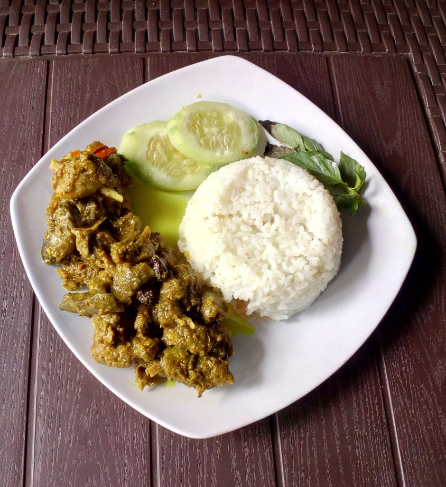

Bahan |
Cara buat
Ayam Nasi Palekko

Bahan:
- 1 ekor ayam, potong kecil-kecil
- 50 ml air asam kental
- 1 batang serai geprek
- 1 cm lengkuas geprek
- 2 lembar daun salam
- 1/2 sdt kunyit bubuk
- 2 lembar daun jeruk
- Secukupnya garam
- Secukupnya merica
- Secukupnya kaldu ayam bubuk (opsional)
- Secukupnya minyak goreng
Bahan bumbu halus:
- 5 siung bawang putih
- 10 buah bawang merah
- 30 buah cabai kecil
Cara membuat:
- Potong ayam sekecil mungkin. Cuci lalu rendam dengan air asam, diamkan sekitar 15 menit.
- Tumis bumbu halus hingga harum, masukkan ayam termasuk juga air asamnya, aduk rata.
- Masukkan semua bahan lainnya lalu aduk rata dan koreksi rasa.
- Masak hingga airnya menyusut sambil tetap diaduk sesekali agar bumbu meresap merata.
- Sajikan ayam nasu palekko bersama sepiring nasi hangat.
Kembali ke atas